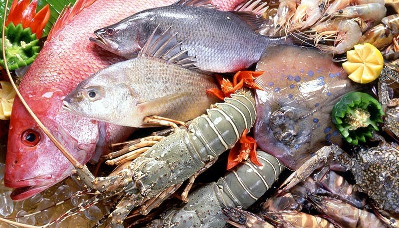
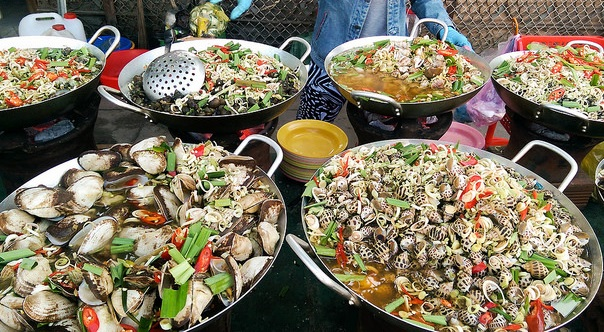
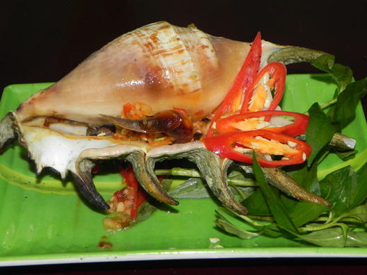

Tìm hiểu ngay
Thành phố biển Nha Trang là thủ phủ của tỉnh Khánh Hòa, thuộc miền duyên hải Nam Trung bộ Việt Nam. Vịnh biển Nha Trang là một trong những vịnh biển đẹp nhất thế giới, đó là món quà vô giá mà thiên nhiên ban tặng cho vùng đất này.
Tuyến đường Trần Phú chạy dọc theo bờ biển, là con đường lớn nhất, đẹp nhất, cũng là nơi sầm uất nhất của thành phố Nha Trang, trên tuyến đường này có rất nhiều khách sạn, quán ăn ... bên kia đường là bãi tắm tuyệt đẹp của Tp Nha Trang.
Khách sạn ở Nha Trang hầu hết đều nằm gần biển để đáp ứng nhu cầu nghỉ dưỡng, tắm biển của du khách. Đi du lịch Nha Trang bạn nên chọn khách sạn theo tiêu chí khu vực sẽ nghỉ, sau đó đến hạng sao và giá tiền. Dưới đây là những khu vực bạn nên đặt khách sạn.
Khu vực trung tâm thành phố Nha Trang có rất nhiều nhà nghỉ, khách sạn, resort. Đây là khu vực sầm uất, náo nhiệt nhất Nha Trang, xung quanh có rất nhiều điểm du lịch đẹp của Nha Trang, nổi tiếng nhất là bãi biển trung tâm Nha Trang rất đẹp. Phần lớn khách du lịch Nha Trang đều đặt phòng khách sạn ở khu vực trung tâm này vì dịch vụ rất phát triển, có nhiều nhà hàng, quán ăn ngon, nghỉ ở đây rất thuận tiện cho tắm biển và đi tham quan các điểm du lịch nổi tiếng của Nha Trang. Giá phòng ở khu vực trung tâm khá cao, khách sạn tập trung trên tuyến đường Trần Phú, Hùng Vương, Nguyễn Thiện Thuật, Biệt Thự ... khách sạn khu vực này có view rất đẹp nhìn thẳng xuống biển, để tắm biển bạn chỉ cần đi bộ vài phút từ chỗ nghỉ là ra tới bãi biển.
Nha trang không chỉ nổi tiếng với những bãi biển trong xanh, những hòn đảo đẹp như mơ, mà nơi đây còn để lại ấn tượng với du khách bởi những món ngon khó cưỡng mang đậm hương vị của biển đảo.
Hải Sản Tươi Sống: Hải sản là 1 phần không thể thiếu trong ẩm thực Nha Trang, với bờ biển dài và có truyền thống khai thác hải sản lâu đời, nha trang chính là thiên đường cho những ai yêu thích các món ăn đậm chất biển.

Dưới đây là danh sách những món hải sản ngon nổi tiếng của Nha Trang
CÁC MÓN ỐC: Mùa ốc ngon nhất từ tháng 2 đến tháng 9. Sang tháng 10 là mùa ốc sinh sản, con ốc lúc này hết ngon bởi lạn sạn ốc con trong bụng. Thế nhưng, hầu như ở đây lúc nào cũng có ốc ngon phục vụ khách. Mỗi quán có những chiêu thức giữ hàng và bí quyết nuôi trồng hải sản.
Đi du lịch Nha Trang mà không thưởng thức một lần món ốc Nha Trang thì thật là phí hoài. Du khách có thể dễ dàng tìm được các món ốc ngon lạ như: ốc nhảy, gỏi ốc, ốc xào, ốc luộc, ốc nướng, cháo ốc, ốc xào sa tế.... ở Nha Trang, dưới đây là danh sách những loại ốc ngon nổi tiếng ở Nha Trang.
 Và còn nhiều món ngon khác....!!! Hẹn gặp các bạn một ngày không xa (^_^)...!